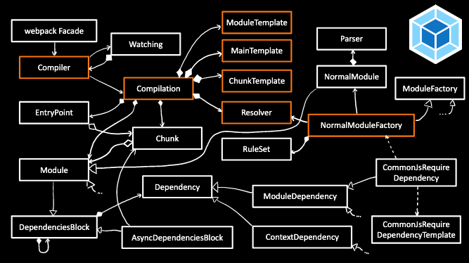

##! HMR 101
I came to know Hot Module Reload like any React developer from documentation in 2017, which by then was pretty stable. But the concept of hot module reload was first discussed by [Bruce Hauman](https://www.youtube.com/watch?v=j-kj2qwJa_E) and [Dan Abramov](https://www.youtube.com/watch?v=xsSnOQynTHs) back in 2015. At the time, it was a pretty ground-breaking idea, welcomed with enthusiasm by many developers as it's really an essential feature of a development environment that preserves your creativity flow.
Dan's solution is to record methods of a class separately and replace them in instances with proxies. When a change is detected, new methods are sent to the client, and proxies will now execute new code, therefore the actual instance and its state stay untouched. It's about wrapping methods and functions with another meta-function that would be able to perform substitutions at runtime.
To enable the reload for React, we need to import the ``hot`` method and wrap the default method with it:
```js
import { Component } from 'react'
import { hot } from 'react-hot-loader'
class App extends Component {
render() {}
}
export default hot(module)(App)
```
When calling the ``hot`` method for the first time, its code will register a proxy for the class.
A proxy means that methods of the prototype were wrapped by a function that can will call updated methods when they arrive. This is why when you step into an method of a class when hot reload is activated, you'll not get to it straight away, but will end up in the `wrappedMethod` instead as shown on the video below.
The wrapper and other features make up [`react-hot-loader`](https://github.com/gaearon/react-hot-loader/) while it's _Webpack_ that is responsible for establishing client-server communication and providing an API for updates of MODULES (everything that's exported), but not classes (refreshes to which are more refined by React's hot loader).
###! Webpack Modules
Whereas the `react-hot-loader` can be seen as "software" reloading mechanism, the modular system of Webpack can then be thought of as underlying "hardware". Its internal logic is very easy to understand NOT!

© [Tobias Koppers](http://docplayer.net/94651783-How-works-tobias-koppers.html)
What you see is a complex build tool that implements its own modular system. In short, it analyses source code, builds dependency trees, and puts everything together (it can also tree-shake unused code). It will always wrap source code into its own, making it a black box for everyone who doesn't get hands on its internals. The total code can then be served to the browser in chunks, but it's all tied up to Webpack's own modules.
```js
/* index.js */
const a = lib()
// becomes:
const a = Object(_lib__WEBPACK_IMPORTED_MODULE_3__["lib"])();
/* lib.js */
export const lib = () => {
console.log('lib')
}
// becomes
"use strict";
__webpack_require__.r(__webpack_exports__);
/* harmony export (binding) */ __webpack_require__.d(__webpack_exports__, "lib", function() { return lib; });
const lib = () => {
return 'example';
};
```
Both files are concatenated into a single chunk. The code above shows that the lynchpin of Webpack is `__webpack_require__` that ties together all modules in the whole of the bundle. It's quite similar to browserify that also makes use of CommonJS require method (via its [``prelude``](https://github.com/browserify/browser-pack/blob/master/prelude.js)) to make dependencies aware of each other.
Webpack has become pretty much a default for front-end web-development, but did you know that the price for this complexity is 342 additional dependencies you're pulling along during its installation:

Your ``node_modules`` will be 20MB after that, but it seems like nobody cares about that sort of thing anymore. Everyone is so used to this sad reality of life, that it just became normal. Webpack is probably OK for larger projects but if you want to create a very simple JS app, you basically need a nuclear power plant, and this is repeated for each new project. Webpack is good software that has helped to put together many websites, but it doesn't have to be a standard. I'm not very happy with jamming my `node_modules` so that I can produce a bundle.